十三行博物館
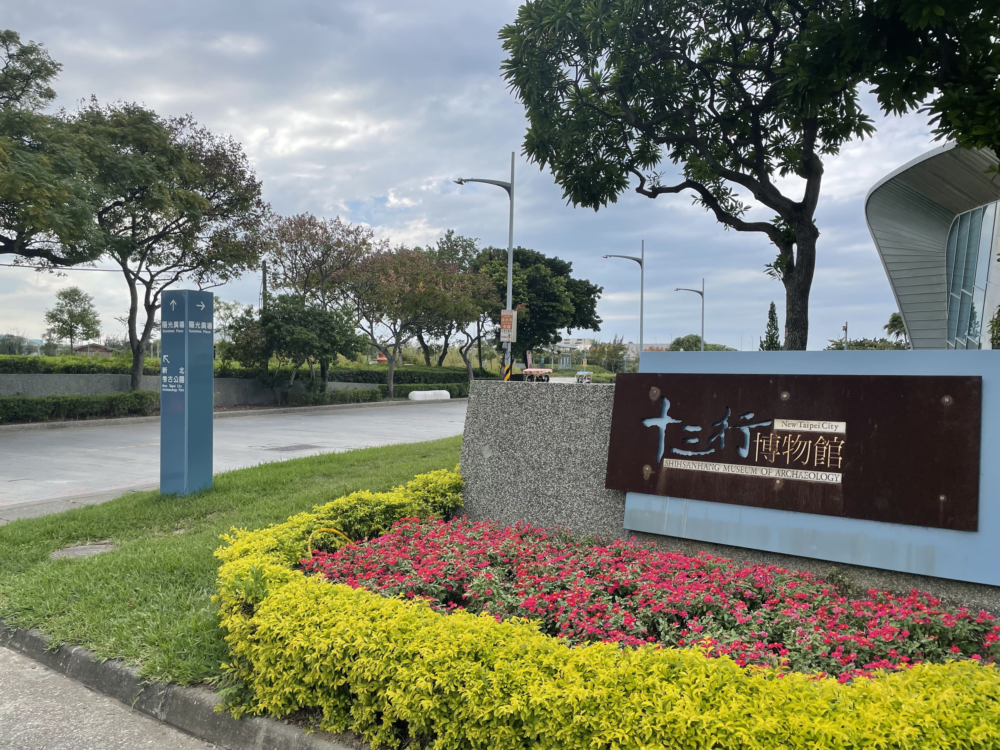
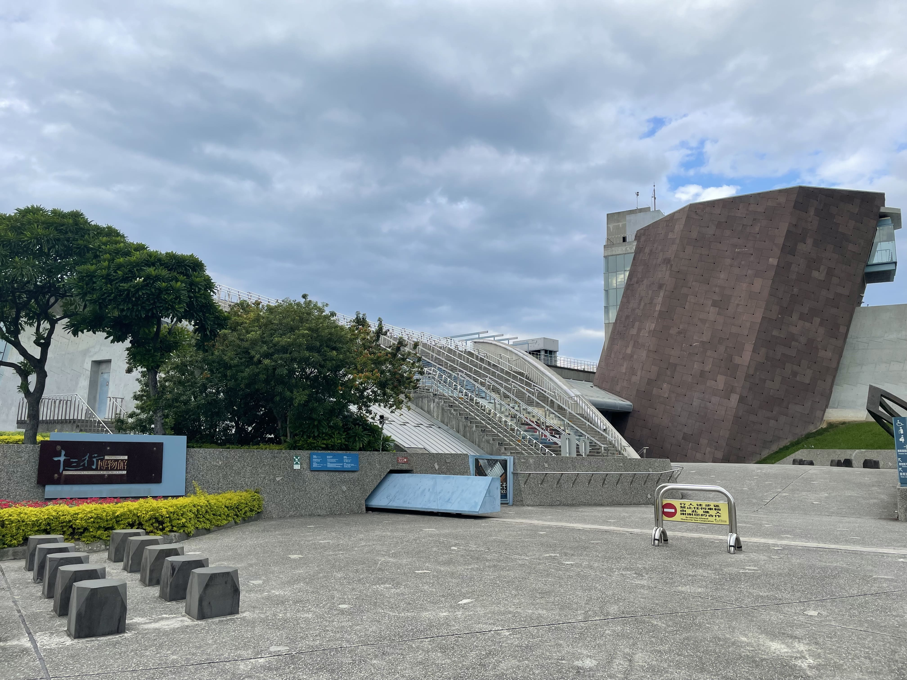
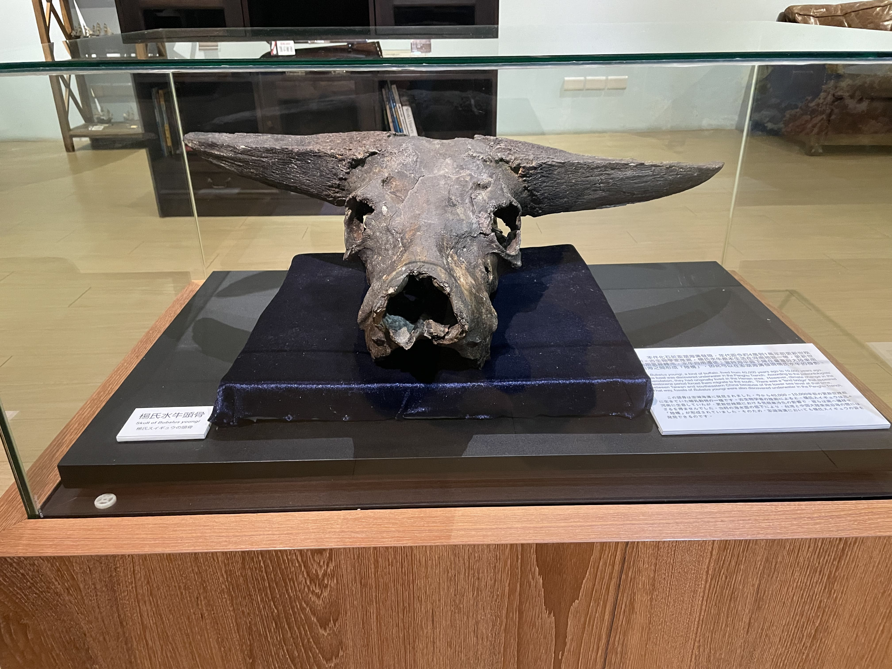
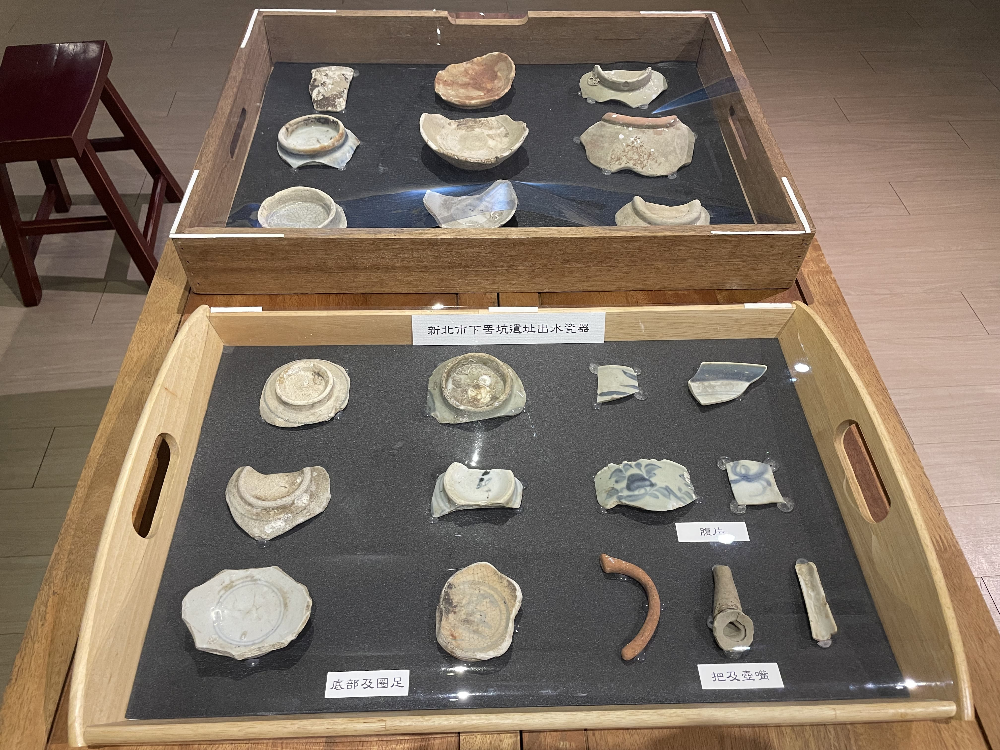
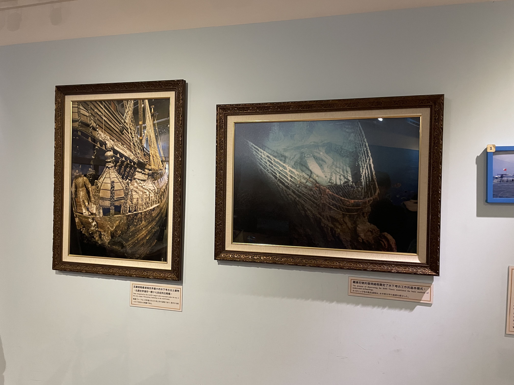
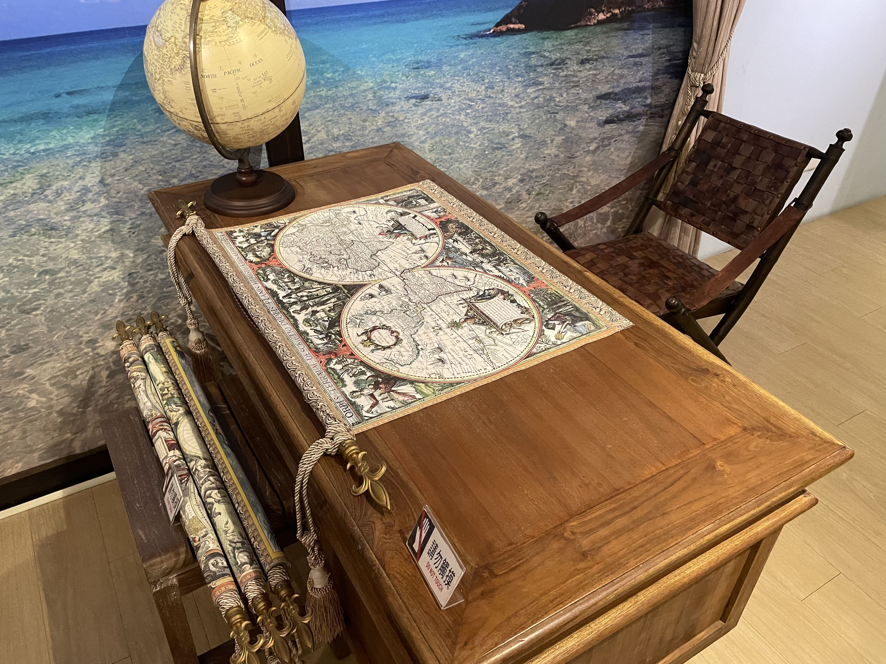
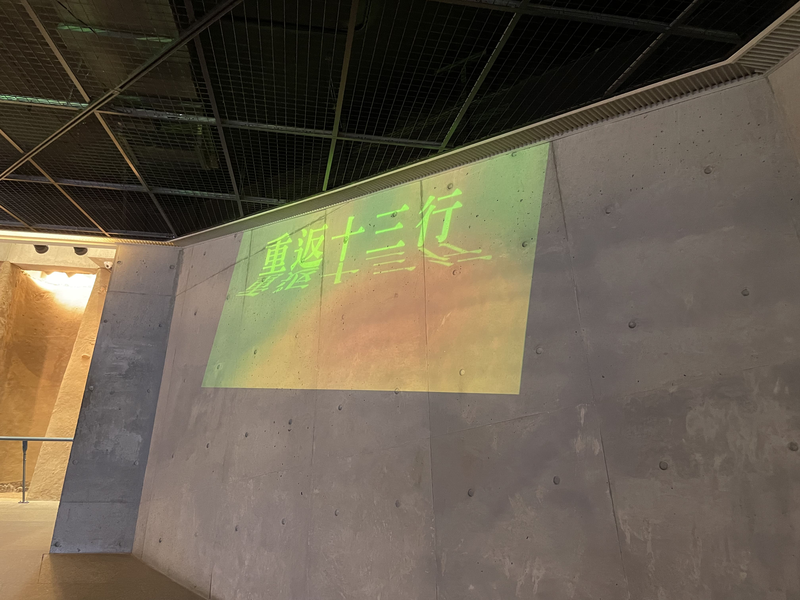
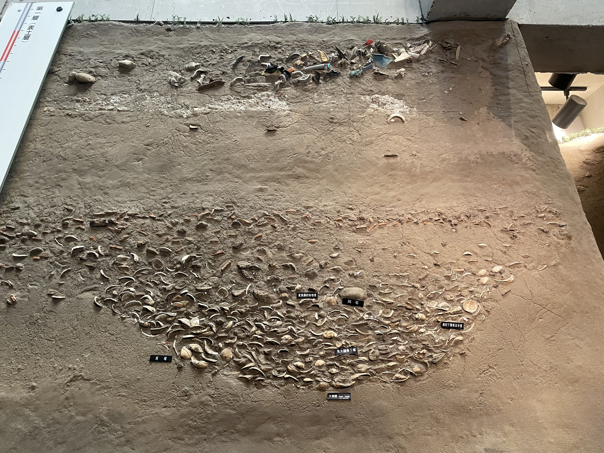
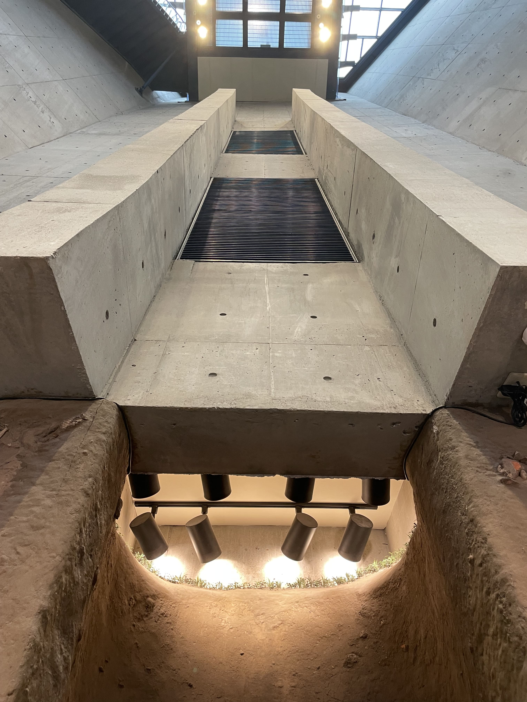
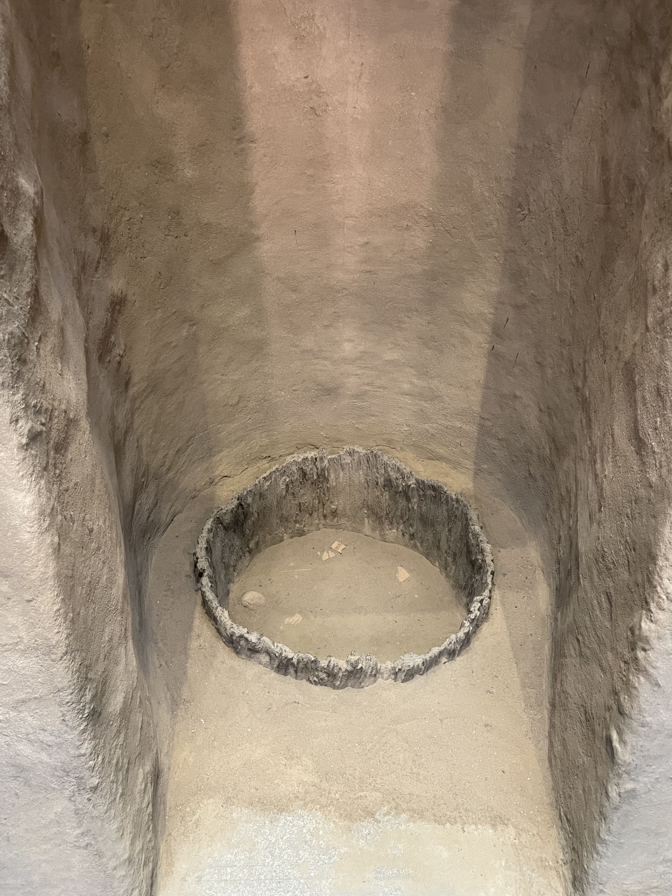
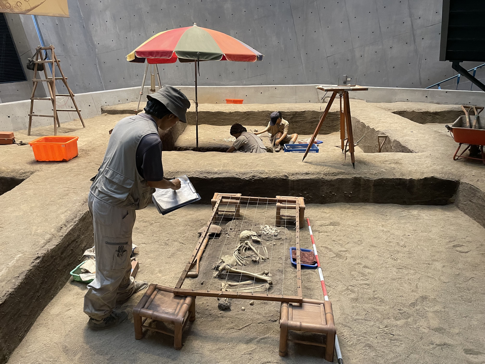
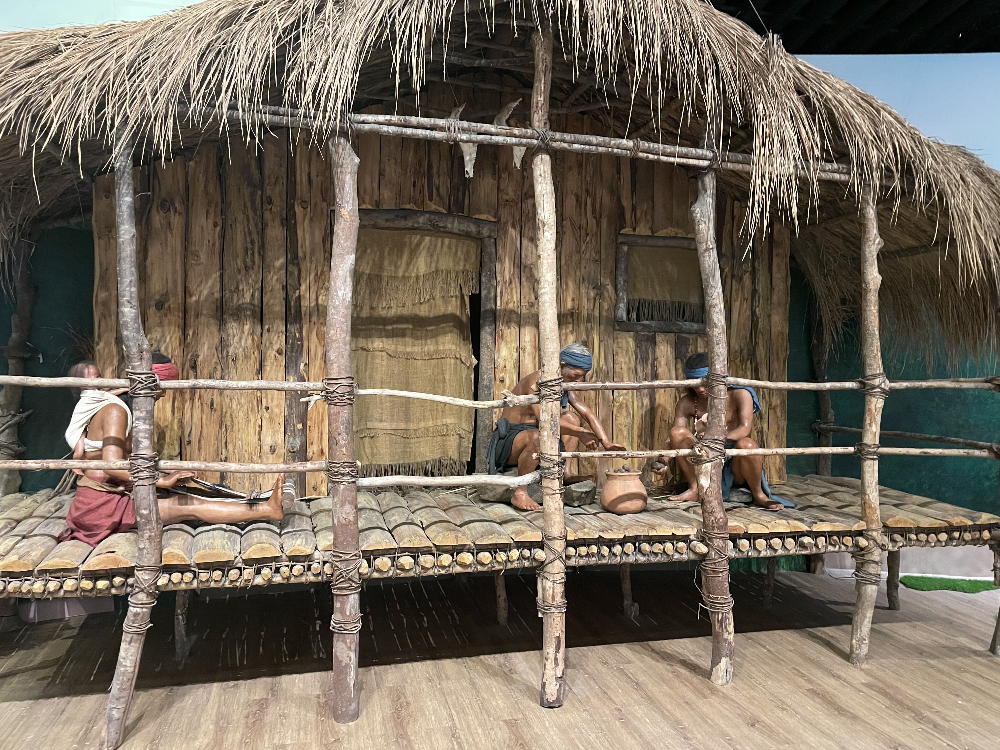
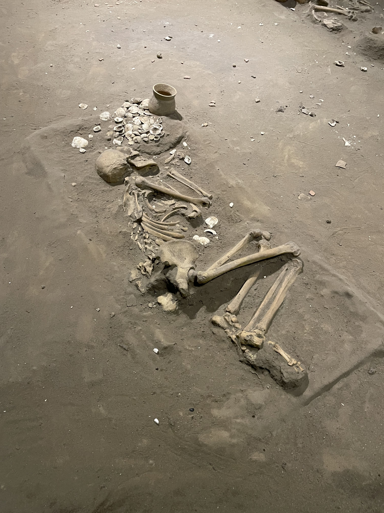
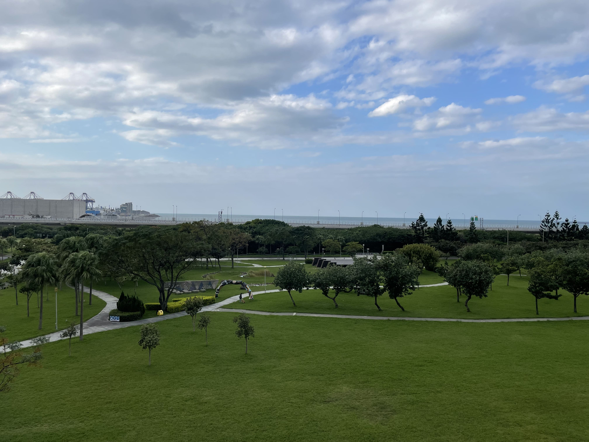
景點介紹
為台灣第一座市立考古博物館，設立目的為保存及推廣十三行遺址的史前文化。十三行文化屬於北臺灣地區的鐵器時代，時間大約在距今1,800~500年前，是目前臺灣唯一確定擁有煉鐵技術的史前居民。他們的生活方式不是今日的我們能夠想像，但是從十三行博物館則可窺知一二。博物館分別由三棟建築組成象徵為山與海，及設計成傾斜不正的八角塔，象徵毀壞遺跡與無法還原的歷史真相，由大片尖銳角度清水模牆面呈現，暗示考古現場無法重現的狀況，側面兩道高牆指向觀音山上的大坌坑遺址，暗示兩者時間連結。
景點資訊
電話：(02)2619-1313 時間：9:00 - 17:00 地址：新北市八里區博物館路200號
粉絲團
官網